RTR: Imperium Surrectum
RTR: Imperium SurrectumMeroe
← all settlements · all regions · wiki index
The settlement of the region of Medwi, held at the campaign start by Kush (Ethiopian) — their capital.
Size: Large town · Population: 5,500 · Buildings: 11
What is already built
| Building chain | Level | Building chain | Level | Building chain | Level | Building chain | Level | ||||
|---|---|---|---|---|---|---|---|---|---|---|---|
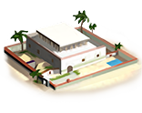 | core building | Governor's Villa | dates cultivation | Date Palm Plantation (Rural) | 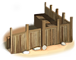 | defenses | Wooden Palisade | governmentD | Homeland | ||
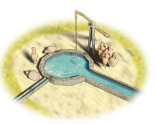 | health | Cisterns (Sanitation) | hinterland region | Region Information Scroll | 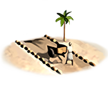 | hinterland roads | Roads | 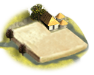 | irrigated farming | Basin Irrigation (Crops) | |
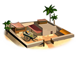 | market | Local Barter | 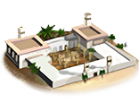 | military industrial complex | Basic Armoury | 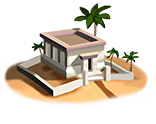 | temples standard | Shrine |
What can be recruited here
| Unit | Raised at | Cost | Upkeep | Unit | Raised at | Cost | Upkeep | Unit | Raised at | Cost | Upkeep | |||
|---|---|---|---|---|---|---|---|---|---|---|---|---|---|---|
| Kushite Axemen | Homeland | 1,587 | 581 | Kushite General's Bodyguard | Homeland | 4,153 | 63 | Kushite Guard Infantry | Homeland | 2,106 | 771 | |||
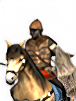 | Kushite Heavy Cavalry | Homeland | 2,179 | 877 | 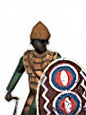 | Kushite Infantry | Homeland | 1,828 | 669 | Kushite Javelinmen | Homeland | 915 | 335 | |
| Kushite Light Cavalry | Homeland | 1,339 | 539 | Kushite Spearmen | Homeland | 1,484 | 543 |
3 more units once the building is up — greyed out, with what each needs.
| Unit | Once you have | Cost | Upkeep | Unit | Once you have | Cost | Upkeep | |||||||
|---|---|---|---|---|---|---|---|---|---|---|---|---|---|---|
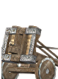 | Ballistas | Armourer (Industry), Foundry (Industry) | 1,753 | 642 | 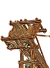 | Lithoboloi | Armourer (Industry), Foundry (Industry) | 2,533 | 927 |
| Unit | Once you have | Cost | Upkeep | |||||||||||
|---|---|---|---|---|---|---|---|---|---|---|---|---|---|---|
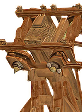 | Large Lithoboloi | Foundry (Industry) | 3,073 | 1,125 |
The land around it
Terrain, climate, fertility, water, port, the trade goods placed inside the borders, and the recruitment zones and homeland this ground counts as, are all on Medwi — stated there once, so the two pages cannot disagree.